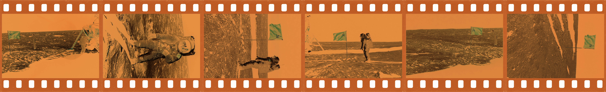
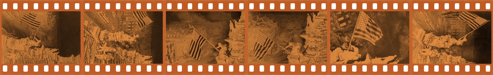
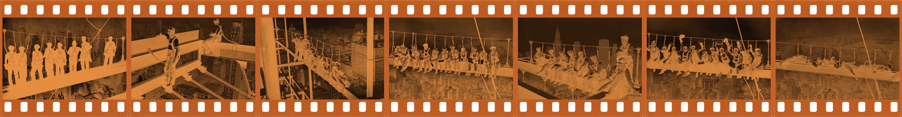
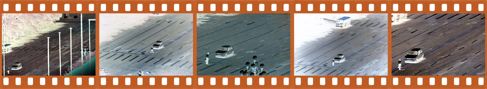

False Negatives
False Negatives is a project about the collapse of photographic evidence. It presents AI-manipulated historical photographs as if they were authentic archival objects. By altering iconic images from the past and then printing them onto genuine black-and-white negatives or positive film slides, the work asks viewers to confront how fragile our trust in visual documentation has become.
Color-film simulation: inverted colors, with an orange base for the black-and-white photographs.
Scroll sideways through each strip. Use the arrows, swipe, or focus a strip and use your arrow keys.
Apollo 11 moonlanding

Flag over the Reichstag

Lunch atop a skyscraper

Tank man

When any photograph can be fabricated, every photograph can be doubted. Then, the future fills with images that are real but can’t be trusted: a past lost to false negatives.